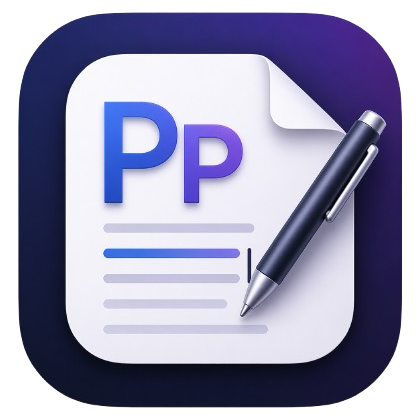

Local workspaces
Open folders, browse files, and keep recent sessions ready for the next pass.

PPText EditormacOS-first code editing
PPText Editor is built for local workspaces, fast file switching, clean writing flow, and a crisp Sublime-inspired editing feel with practical touches like middle-click tab closing and GitHub connection.
const editor = createWorkspace({
theme: "sublime",
fontFace: "JetBrains Mono",
keyboardFirst: true,
github: "connected",
});
editor.open("local-project");What it does
Open folders, browse files, and keep recent sessions ready for the next pass.
Syntax highlighting, tabs, minimap support, and familiar editor behavior from day one.
Command palette, quick navigation, save shortcuts, and search without reaching for the mouse.
Connect a GitHub account with a personal access token and keep the editor ready for repo workflows.
Close tabs with the mouse wheel click, the close button, or command palette flow.
Switch color schemes, font face, size, tab width, word wrap, and autosave in a focused panel.
Connected workflows
Add a GitHub personal access token, verify the account, and keep the connection saved locally for the next layer of repository features. It is intentionally simple, desktop-friendly, and quick to set up.
Preview only: connect your own account in Preferences → GitHub.
Workflow
PPText Editor keeps the surface area calm: a file tree, a fast editor, workspace search, and a command palette. The result feels light, direct, and ready for everyday local coding.
Ready to try it?
The current build includes GitHub connection, middle-click tab closing, and a refreshed settings panel.
Download DMG